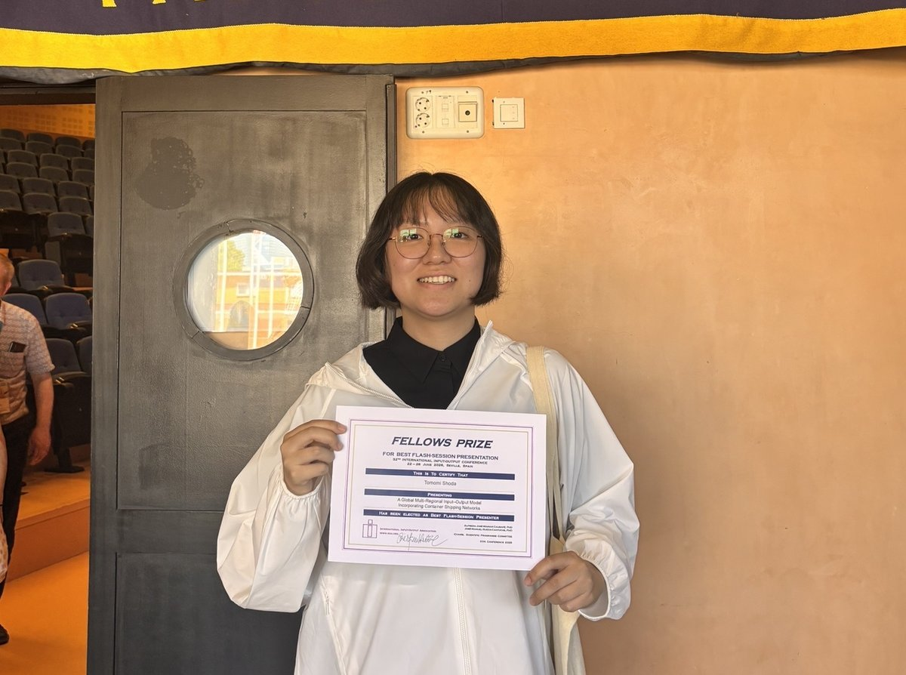
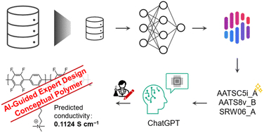

News & Updates ニュース & 更新情報
Research highlights, awards, and programme announcements from the Q-ENERGY Innovator Unit. Q-ENERGYイノベーターユニットの研究ハイライト、受賞情報、プログラムのお知らせをお届けします。
Tomomi Shoda Wins the IIOA Fellows Prize for Best Flash-Session Presentation 庄田朋申、IIOA Fellows Prize（フラッシュセッション優秀発表賞）を受賞
Fellow Tomomi Shoda received the Fellows Prize for Best Flash-Session Presentation at the 32nd International Input–Output Conference in Seville, Spain (22–26 June 2026). ユニット生の庄田朋申が、スペイン・セビリアで開催された第32回国際産業連関分析会議（2026年6月22〜26日）にてフラッシュセッション優秀発表賞（Fellows Prize）を受賞しました。
Read more → 続きを読む →
21st Joint Seminar — June 15, 2026 第21回合同ゼミ — 2026年6月15日
Three doctoral fellows nearing the end of their programmes — Go Yokuhou, Kaili Zhang, and Xianzhe Yang — presented progress toward their doctoral theses. 修了を控えた博士課程の3名（呉翼峰・Kaili Zhang・楊賢哲）が、博士論文に向けた進捗を発表しました。
Read more → 続きを読む →Paper by Phua Yin Kan et al.: Making Black-Box AI Explainable for Polymer Design Phua Yin Kanらの論文：ポリマー設計のためのブラックボックスAIを説明可能に
A new framework combining explainable AI, ChatGPT, and expert knowledge enables researchers to extract quantitative design guidelines for anion exchange membrane materials from complex neural network models. 説明可能AI・ChatGPT・専門知識を組み合わせた新しいフレームワークにより、複雑なニューラルネットワークモデルからアニオン交換膜材料の定量的な設計指針を導き出すことが可能になりました。
Read more → 続きを読む →
Dr. Yulu Chen's Paper in Building and Environment Receives 2025 Best Paper Award 陳玉露博士の論文がBuilding and Environment誌の2025年最優秀論文賞を受賞
Only five papers are selected annually from approximately 10,000 submissions. Dr. Chen's work on a roof-integrated solar heating and humidity control system earned this distinction. 年間約1万件の投稿の中から5本のみ選出される最優秀論文賞に、陳博士の屋根一体型太陽熱収集・湿度制御システムに関する研究が選ばれました。
Read more → 続きを読む →Digital Pamphlet for FY2024 Has Been Updated 2024年度デジタルパンフレットを更新しました
The Q-ENERGY Innovator Unit digital pamphlet for fiscal year 2024 is now available, featuring greetings from Unit Head Prof. Akari Hayashi and introductions from all fellows. 2024年度Q-ENERGYイノベーターユニットのデジタルパンフレットを公開しました。林朱里ユニット長の挨拶と全ユニット生の活動紹介を掲載しています。
Read more → 続きを読む →16th Joint Seminar — March 3, 2025 第16回合同ゼミ — 2025年3月3日
Three doctoral fellows presented their research at the 16th joint seminar, held in-person at ITO Campus and via Zoom. 第16回合同ゼミが対面・Zoom併用で開催され、3名の博士課程学生が研究発表を行いました。
Read more → 続きを読む →Kyushu Energy Week 2025 — Unit Poster Session 九州エネルギーウィーク2025 — ユニットポスター発表
All unit fellows participated in the January 27 poster session, showcasing their doctoral research to researchers, faculty, and external guests at ITO Campus. 全ユニット生が1月27日のポスターセッションに参加し、伊都キャンパスで研究者・教員・外部ゲストに研究成果を発表しました。
Read more → 続きを読む →Summer Camp 2024 Video Now Available 夏合宿2024の動画を公開しました
The video from the 2024 summer camp in Karatsu and Genkai, Saga Prefecture — including a visit to the Genkai Nuclear Power Plant — is now on YouTube. 佐賀県唐津市・玄海町での夏合宿2024（玄海原子力発電所訪問含む）の動画をYouTubeで公開しました。
Read more → 続きを読む →15th Joint Seminar — November 26, 2024 第15回合同ゼミ — 2024年11月26日
Four third-year doctoral fellows presented their research across two sessions, approaching the final stages of their doctoral work. 博士3年の4名が2セッションに分かれて研究発表を行い、博士研究の最終段階を報告しました。
Read more → 続きを読む →Yin Kan Phua et al.: Machine Learning Map for Anion Exchange Membrane Design Yin Kan Phuaら：アニオン交換膜設計のための機械学習マップ
Published in ChemElectroChem — unsupervised machine learning reveals hidden structure-property relationships in AEM polymers, guiding materials exploration for fuel cells and electrolysers. ChemElectroChem誌掲載。教師なし機械学習でAEMポリマーの隠れた構造－特性関係を解明し、燃料電池・電解装置向け材料探索を加速します。
Read more → 続きを読む →Digital Pamphlet for FY2023 Has Been Updated 2023年度デジタルパンフレットを更新しました
The FY2023 digital pamphlet is now available as an interactive e-book, featuring messages from university leadership and introductions from all 28 fellows. 2023年度デジタルパンフレットをインタラクティブな電子書籍として公開しました。大学執行部のご挨拶と28名全ユニット生の紹介を掲載しています。
Read more → 続きを読む →Seiya Imada et al.: CO₂ Emission Hotspots in Japanese Wooden House Supply Chains 今田聖也ら：日本の木造住宅サプライチェーンにおけるCO₂排出ホットスポット
Published in Journal of Environmental Management — identifies steel and cement production as the dominant carbon hotspots in wooden residential construction, with implications for renovation policy. Journal of Environmental Management誌掲載。木造住宅建設における鉄鋼・セメント製造が主要なCO₂排出源であることを特定し、住宅改修政策への示唆を提示します。
Read more → 続きを読む →Summer Camp 2023 — Kagoshima 夏合宿2023 — 鹿児島
Three days in Kagoshima: group work in Kirishima, a visit to Kyocera's R&D centre, and a trip to Yakushima Island to see Japan's first carbon-neutral electricity system. 鹿児島3日間の合宿：霧島でのグループワーク、京セラ研究開発センター訪問、そして国内初の電力カーボンニュートラルシステムを有する屋久島訪問。
Read more → 続きを読む →Sun Mingxu Receives the 103rd CSJ Annual Meeting Student Presentation Award 孫明旭、第103回CSJ年次大会学生講演賞を受賞
First-year fellow Sun Mingxu was honoured with the Student Presentation Award at the 103rd Annual Meeting of the Chemical Society of Japan. 1期生の孫明旭が日本化学会第103回春季年会において学生講演賞を受賞しました。
Read more → 続きを読む →Zifei Nie et al.: Energy-Efficient Lane-Change Planning for Personalised Autonomous Driving 聶子非ら：個人適応型自動運転における省エネルギー車線変更計画
Published in Applied Energy — a personalised lane-change strategy for autonomous vehicles achieves up to 5.73% energy savings while matching individual driving style preferences. Applied Energy誌掲載。個人の運転スタイルを考慮した自動運転車両の車線変更戦略により、最大5.73%のエネルギー削減を実現します。
Read more → 続きを読む →